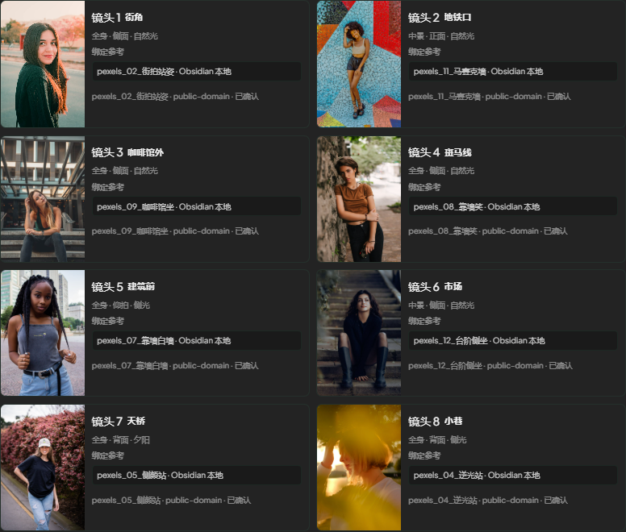

01
公开体验
使用随产品发布、已标注来源的开放示例素材。适合第一次体验。
- 不连接你的本地目录
- 数据保存在当前浏览器
- 不使用私人 Obsidian 内容
真实工作流
按照摄影师的实际动作组织内容：先确定需求和参考，再落到镜头、设备、日程与现场执行。

数据与隐私
PhotoAtelier 提供工具和开放模板，不把任何人的图库变成其他人的默认素材库。
01
使用随产品发布、已标注来源的开放示例素材。适合第一次体验。
02
通过本地连接器索引你设备上的照片、笔记和附件。
03
适合高隐私创作：本地运行、离线可用，由你完全控制。
反馈与改进
这不是客套话。你的反馈会进入待处理队列，用于确定下一次迭代优先级。
反馈默认不附带方案、图片或笔记内容。